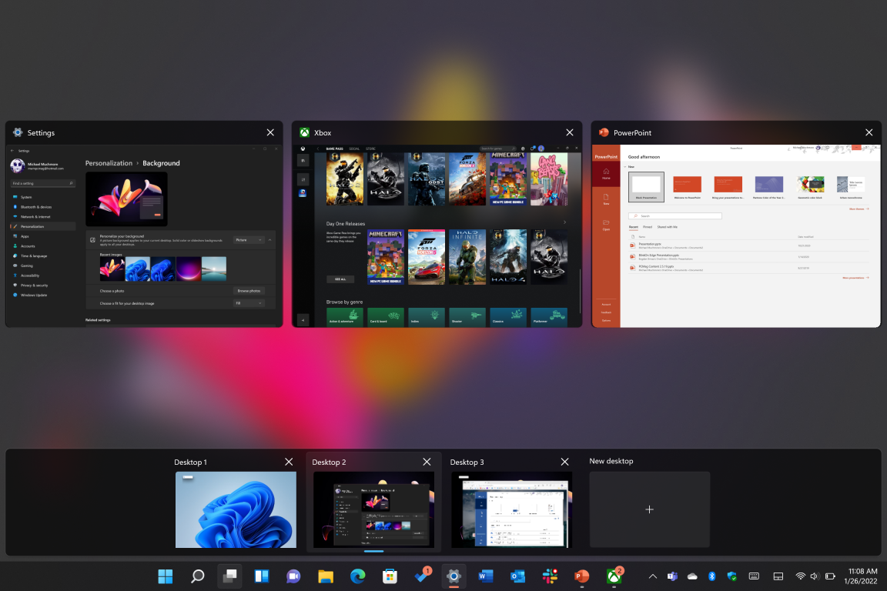

Windows 11: Biggest Changes and New Features
Wondering what's new in Windows 11 and whether it's worth upgrading? We've been using it for months and have
everything you need to know.
Drastic redesigns of Windows have proven disastrous for Microsoft in the past, with Windows 8 the worst case
in point. But after testing Windows 11 for myself, I’ve found that, though the interface looks quite
different, it doesn't take long to figure out how things work. At its introduction event, Microsoft chief
product officer Panos Panay expressed a desire not to alienate longtime Windows aficionados, and that's a
good thing (though almost impossible, given the way many people react to change). Despite that goal of
keeping it familiar, there’s plenty of innovation in Windows 11.
The new operating system started rolling out as an upgrade to PCs on October 4, 2021. Before taking the
plunge to upgrade, you should first determine whether your PC can run Windows 11. The rollout will last
through mid-2022, according to Microsoft, as the myriad PC hardware and software configurations are
validated for compatibility. Keep an eye on PCMag's Windows 11 page for related tips and news. Now, let's
get started with our look at the biggest new changes and features.
Windows 11 Has a New Look
The Taskbar icons are now centered and smaller like in Chrome OS, but the Start button is still to the left
of the other app icons. Windows get tightly rounded corners, similar to macOS. I’m still not a fan of the
always-narrow Taskbar buttons. In Windows 10 you get wide taskbar buttons for running apps that contrast
with narrow icons for pinned apps. The centered look may win me over, however, since it doesn't require you
to move the mouse cursor across a full screen to launch an app from the Start Menu.
More subtle are the transparency, animations, and clean icon design that represent an evolution of the Fluent
Design System(Opens in a new window), which, though promised, never fully took over in Windows 10. A couple
of new materials join the translucent one called Acrylic: the opaque Mica, which is slightly tinted based on
the background color; and Smoke, which darkens other areas to make you focus on an important input region.
Dark mode, too, looks more consistent, and these materials change to reflect that mode.
Windows 11 Widgets
Widgets are making a comeback! Apple bolstered widgets in iOS 14 and iPadOS 15, and Microsoft dabbled in
bringing back desktop widgets with the News and Interests panel in Windows 10. But Windows 11 widgets further
the idea. The new widgets deliver a personalized feed of news, weather, traffic, sports, and stock market data,
powered by AI for customization and Edge for rendering. Later updates will let you expand the Widgets panel to
fill the whole screen, and third-party content providers will be able to take advantage of this new feature.
The Photos app in Windows 11 is a sleeper in that it's remarkably capable not only for organizing and editing
photos, but also for video editing with titles, transitions, effects, and more. The Photos app includes face
recognition, auto-generated albums, and integrated maps for photos with location data—features that even some
paid photo applications lack. New for Photos is an edge-to-edge photo view, multi-image view, and an improved
cropping interface, along with the Fluent Design updates.
A Redesigned Settings App
The redesigned Settings app now features a persistent left menu. It saves you from having to back out of nested
settings to quickly get to another group. Otherwise, you get most everything found in Windows 10's Settings.

Now in Windows 11 you can set a different background color or image for each virtual desktop you have, which
makes a lot of sense if you have one desktop for work and another for personal use, for example. Note that you
can only set the backgrounds to be pictures or solid colors. If you want a slideshow background or Theme, then
that background will apply to all desktops. The Snap Layouts mentioned above can also be used separately on each
desktop. For more, read How to Manage Virtual Desktops in Windows 11.
Teams Is Integral in Windows 11
One of Microsoft’s biggest hits over the last few years is Teams, the videoconferencing and messaging tool.
Microsoft Teams went from having 20 million users in 2019 to more than 250 million active monthly users by the
end of 2021. The company wants it to reach beyond the workplace, though, and a new taskbar button gives easy
access to Teams in Windows 11.
Teams is cross-platform, running on Android, iOS, and macOS as well as Windows. It also works with SMS for those
who don’t have the mobile app installed, meaning you can text message anyone's phone number from your PC for
free, an appreciated perk.
The feature has two parts: Teams Chat and Teams videoconferencing, which opens a separate window. When you start
a message to someone who doesn't have an account, they get an invitation to sign up for the free service.
New Sounds in Windows 11
click on the above image for more!!!
The soundscape of Windows starting up, warning, notifications, and more have become gentler, more soothing, and
shorter in Windows 11. In using the OS for a few weeks, I've found that the new sounds indeed make for more
enjoyable computing sessions.
Gaming Gets a Boost in Windows 11
You can run Xbox Game Pass games on Windows 11, and Xbox Cloud Gaming is supported in the Xbox app on Windows
11. That means every PC is now an Xbox as well as a PC, according to apps and gaming analyst Jordan Minor. In
terms of performance and visual quality, the update also adds DirectStorage and Auto HDR. The former speeds
uploading times for games from storage to the graphics card. The latter produces a far richer image quality with
more color range and depth. In terms of comparative raw game performance between Windows 10 and Windows 11, our
hardware analysts found little difference between the two OS versions.